Центральна гранична теорема
В багатьох прикладах генеральна сукупність не буде
розподілена за нормальним законом. В таких випадках слід покладатись на центральну граничну теорему, яка
стверджує, що для будь-якої
генеральної сукупності, не зважаючи на її розподіл ймовірностей, імовірнісний розподіл вибіркової
сукупності буде наближатись до
нормального, якщо об'єм вибірки досить великий.
Навіть якщо генеральна сукупність не
розподілена нормально, або ми не знаємо закону її
розподілу, центральна гранична теорема дозволяє
зробити висновок, що при достатньо великому обсязі вибіркової сукупності, вона буде нормально розподіленою.
Взагалі, якщо об'єм вибіркової сукупності не менше
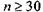
,
то центральна гранична теорема гарантує її нормальний
розподіл не зважаючи на імовірнісний розподіл
генеральної сукупності.
Центральна гранична теорема займає
важливе місце у статистичному аналізі.
Теоретичну основу законів великих
чисел становлять поняття збіжності випадкових величин за
ймовірністю та нерівність Чсбишова.
Послідовність випадкових величин
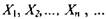
збігається
за ймовірністю до випадкової величини
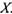
,
якщо для будь-якого
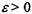
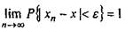
(39)
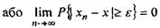
(40)
Збіжність за ймовірністю записується так
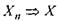
Розглянемо без доведення наступні теореми. 1. Нерівність Чебишова Якщо випадкова величина X має скінчене математичне сподівання та дисперсію, то для довільного є> 0 має місце нерівність
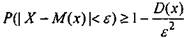
(41)
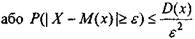
(42)
Приклад 10. Нехай
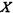
-
випадкова величина з
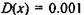
. Знайти
ймовірність, що випадкова величина
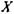
відхилиться
від свого математичного сподівання на величину більшу, ніж 0,1.
Розв'язання. Маємо
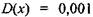
та
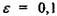
. Використавши
нерівність Чебишова (42), одержимо
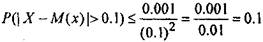
2. Теорема Бернуллі
Нехай ймовірність появи події
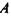
в кожному із п незалежних повторних
випробувань дорівнює
 - число появ події
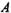
(частота
- число появ події
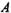
(частота
події) в п випробуваннях.
Тоді
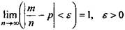
(43)
Доведення. Відносну частоту
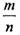
можна
розглядати як невід'ємну
випадкову величину
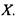
Тоді математичне сподівання і дисперсія випадкової величини
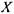
буде
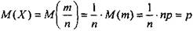
та
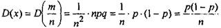
Застосуємо
нерівність Чебишова. Маємо
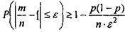
(44)
Звідси граничним переходом при
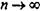
одержуємо (43), що й
треба було довести.
1. Теорема Чебишова
Нехай
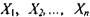
-
послідовність попарно незалежних
випадкових величин, які
задовольняють умовам
1)
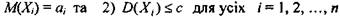
Тоді
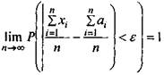
(45)
Доведення. Знайдемо математичне сподівання та дисперсію
середньої випадкових величин, тобто
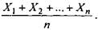
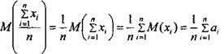
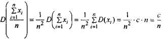
Застосуємо до випадкової величини
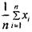
нерівність
Чебишова. Маємо
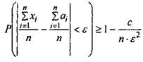
(46)
Границя цієї ймовірності при
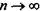
дорівнює 1, тобто
рівність (45) доведено.
4. Центральна гранична теорема
Нехай задана послідовність
незалежних однаково розподілених випадкових величин
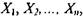
причому
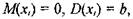

Розглянемо
випадкову величину
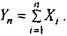
Тоді
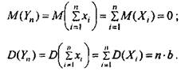
При
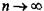
функція розподілу

тобто сума
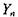
буде розподілена за нормальним законом з
математичним сподіванням
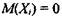
та дисперсією
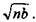